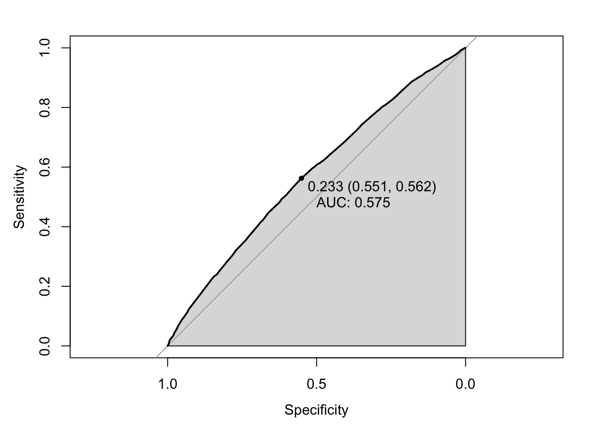

In the NYPD shooting incident database, a variable is called STATISTICAL_MURDER_FLAG which indicates if this shooting incident counted as a murder. It has a binary outcome “TRUE” or “FALSE”. We will use logistic regression model to identify if a shooting can become a murder.
historic_NYPD_df = read_csv("./data/NYPD_Shooting_Incident_Data__Historic_.csv")
year_to_date_df = read_csv("./data/NYPD_Shooting_Incident_Data__Year_To_Date_.csv")
df = bind_rows(historic_NYPD_df,year_to_date_df)
df = df %>%
separate(OCCUR_TIME,into = c("hour","minute","second"),sep = ":")%>%
separate(OCCUR_DATE,into = c("month","date","year"),sep = "/")%>%
mutate(hour=as.numeric(hour),
time_period = case_when(
hour>=0 & hour<6 ~ "MIDNIGHT",
hour>=6 & hour<12 ~ "MORNING",
hour>=12 & hour<18 ~ "AFTERNOON",
hour>=18 & hour<=23 ~ "EVENING"),
month = as.factor(month))%>%
select(BORO,STATISTICAL_MURDER_FLAG,PERP_AGE_GROUP,PERP_SEX,PERP_RACE,VIC_AGE_GROUP,VIC_SEX,VIC_RACE,time_period,month)%>%
mutate(STATISTICAL_MURDER_FLAG = ifelse(STATISTICAL_MURDER_FLAG=="TRUE", 1, 0),
BORO = as.factor(BORO),
PERP_AGE_GROUP = as.factor(PERP_AGE_GROUP),
PERP_SEX = as.factor(PERP_SEX),
PERP_RACE = as.factor(PERP_RACE),
VIC_AGE_GROUP = as.factor(VIC_AGE_GROUP),
VIC_SEX = as.factor(VIC_SEX),
VIC_RACE = as.factor(VIC_RACE))%>%
na.omit()there are some irregular value and we need to deal with them.
df=df[df$PERP_AGE_GROUP != "UNKNOWN", ]
df=df[df$PERP_AGE_GROUP != "1020", ]
df=df[df$PERP_AGE_GROUP != "940", ]
df=df[df$PERP_AGE_GROUP != "224", ]
df=df[df$PERP_SEX != "U", ]
df=df[df$PERP_RACE != "UNKNOWN", ]
df=df[df$VIC_SEX != "U", ]
df=df[df$VIC_AGE_GROUP != "UNKNOWN", ]First, build the initial logistic regression model with all variables
fit = glm(STATISTICAL_MURDER_FLAG ~ BORO+PERP_AGE_GROUP+PERP_SEX+PERP_RACE+VIC_AGE_GROUP+VIC_SEX+VIC_RACE+time_period+month,data=df,family = binomial())
summary(fit)we can see from the above result that some variables do not pass the significance test. Now, we can use the stepwise method to choose variables.
step(fit)Now, we test the reduced model from the above result
fit_2 = glm(formula = STATISTICAL_MURDER_FLAG ~ BORO + PERP_AGE_GROUP +
PERP_RACE + VIC_AGE_GROUP + VIC_RACE + time_period, family = binomial(),
data = df)
summary(fit_2)We can see that PERP_RACE and PERP_RACE still not pass the significance test, now drop these two and run again
fit_3 = glm(formula = STATISTICAL_MURDER_FLAG ~ BORO + PERP_AGE_GROUP +
VIC_AGE_GROUP + time_period, family = binomial(),
data = df)
summary(fit_3)From the above result, we use dummy variables for BOROQUEENS,BOROSTATEN ISLAND,PERP_AGE_GROUP18-24
df$QUEENS = ifelse(df$BORO=="QUEENS",1,0)
df$STATEN = ifelse(df$BORO=="STATEN ISLAND",1,0)
df$BROOKLYN = ifelse(df$BORO=="BROOKLYN",1,0)
df$MANHATTAN = ifelse(df$BORO=="MANHATTAN",1,0)
df$PERP_18 =ifelse(df$PERP_AGE_GROUP=="18-24",1,0)
df$PERP_25 =ifelse(df$PERP_AGE_GROUP=="25-44",1,0)
df$PERP_45 =ifelse(df$PERP_AGE_GROUP=="45-64",1,0)
df$PERP_65 =ifelse(df$PERP_AGE_GROUP=="65+",1,0)Run logistic regression with these dummy variables again and use stepwise method to filter.
fit_4 = glm(formula = STATISTICAL_MURDER_FLAG ~ QUEENS + STATEN + BROOKLYN + MANHATTAN + PERP_18 + PERP_25 + PERP_45 + PERP_65 +
VIC_AGE_GROUP + time_period, family = binomial(),
data = df)
summary(fit_4)
step(fit_4)now,we can run the model for the last time
fit_5 = glm(formula = STATISTICAL_MURDER_FLAG ~ BROOKLYN + MANHATTAN +
PERP_25 + PERP_45 + PERP_65 + VIC_AGE_GROUP + time_period,
family = binomial(), data = df)
summary(fit_5)This model seems ok with all variables having significance. Now we test for the accuracy
ifMudrer = function(glm.model, threshold = 0.5) {
pre.pro = predict(glm.model, type = "response")
pre = if_else(pre.pro >= threshold, 1, 0)
}
recall_accuracy(df$STATISTICAL_MURDER_FLAG,ifMudrer(fit_5))## [1] 0.7634227A receiver operating characteristic curve, or ROC curve, is a graphical plot that illustrates the diagnostic ability of a binary classifier system as its discrimination threshold is varied.The ROC curve is created by plotting the true positive rate (TPR) against the false positive rate (FPR) at various threshold settings.
roc(df$STATISTICAL_MURDER_FLAG, predict(fit_5, type = "response"), algorithm = 3) %>%
plot(auc.polygon = T, print.thres = T, print.auc = T)## Setting levels: control = 0, case = 1## Setting direction: controls < cases
The area under the curve can be used to quantitatively measure the effect of the model. The area under the ROC curve is denoted as AUC, so the larger AUC is, the better the model is. AUC for our model is 0.575 which is acceptable.
At first, we would like to see the significance for each variable
exp(fit_5$coefficients)## (Intercept) BROOKLYN MANHATTAN PERP_25
## 0.1893076 0.8968336 0.8850719 1.3618291
## PERP_45 PERP_65 VIC_AGE_GROUP18-24 VIC_AGE_GROUP25-44
## 1.9209265 2.4727271 1.2569399 1.4176470
## VIC_AGE_GROUP45-64 VIC_AGE_GROUP65+ time_periodEVENING time_periodMIDNIGHT
## 1.4643475 1.9122647 1.1213333 1.1380352
## time_periodMORNING
## 1.3259992we can have the following conclusion:
-Shooting incidents happen in BROOKLYN and MANHATTAN are less likely to be a murder.
-When perpetrators’ age increases, the probability that this shooting incident to become a murder also increases. This conclusion holds for victims.
-Shooting incidents happen in the morning are more like to be a murder.
For example, we have two shooting incidents now. We will use this model to predict which one has a higher probability to be a murder.
–A 36-year-old white female was killed by a 20-year-old black male at 10pm in Brooklyn.
–A 48-year-old Asian male was killed by a 54-year-old white male at 10am in Queens.
test_data = data_frame(BROOKLYN = c(1,0) , MANHATTAN = c(0,0) ,PERP_25 = c(1,0), PERP_45 = c(0,1), PERP_65 = c(0,0) , VIC_AGE_GROUP = c("25-44","45-64"),VIC_RACE = c("WHITE","ASIAN"),VIC_SEX = c("F","M"),time_period=c("EVENING","MORNING"))## Warning: `data_frame()` was deprecated in tibble 1.1.0.
## Please use `tibble()` instead.
## This warning is displayed once every 8 hours.
## Call `lifecycle::last_warnings()` to see where this warning was generated.test_data$prob = predict(fit_5, newdata=test_data, type="response")
test_data$prob## 1 2
## 0.2687603 0.4138679We can see tha the second one has a higher possibility to be amurder.